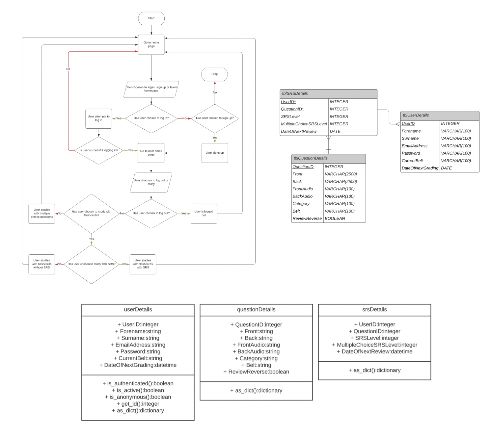

Theory Dojang
Theory Dojang is a website I developed as part of my computer science A-Level. Users of the website can create accounts, after which their information is stored in a database. They can then use an SRS system to study Taekwondo theory with flashcards. The user's progress is tracked, and they are tested with set flashcards each day depending on how well they remembered the flashcards from previous days.
Development
Theory Dojang was a full-stack project with a JavaScript frontend and a Python backend, using a MySQL database for data storage. The web framework I chose to use was Flask.
This project was my first attempt at a full-stack web app and my first introduction to JavaScript and Flask. I was able to develop both my frontend programming ability and my knowledge of how to structure and create a web app from scratch.
As part of this project, I went through a thorough design process, first collecting user requirements, then modelling data and program flow, specific algorithms, data structures, the database design, and more. I have selected the system flowchart, entity-relationship diagram and class diagram to show below.
